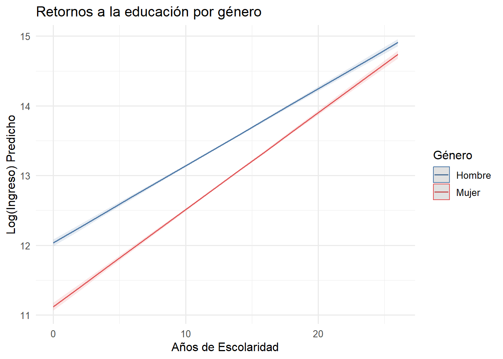
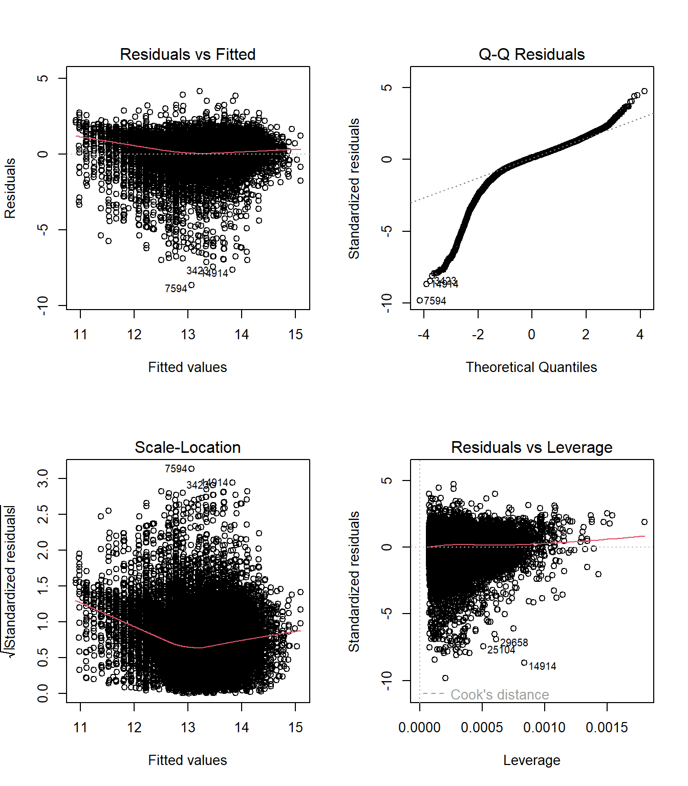

if (!require("pacman")) install.packages("pacman")
pacman::p_load(
tidyverse,
haven,
car,
estimatr,
texreg,
sjPlot,
sandwich,
lmtest
)
# Cargar CASEN 2022
casen2022 <- read_sav("data-sesiones/Casen 2022.sav")Sesión 5: Regresión Lineal Múltiple
Taller de Métodos y Técnicas de Investigación II
En la sesión anterior exploramos la relación entre educación e ingresos utilizando un modelo bivariado. Encontramos que cada año adicional de escolaridad se asocia con un aumento de aproximadamente 12% en el ingreso del trabajo. Sin embargo, ¿podemos confiar en esta estimación? En las ciencias sociales, raramente una sola variable explica un fenómeno complejo como los ingresos laborales. Al omitir variables relevantes que determinan tanto la educación como los ingresos, corremos el riesgo de obtener estimadores sesgados.
Hoy formalizaremos el Modelo de Regresión Lineal Múltiple (MRLM). Este modelo nos permite estimar el efecto de una variable independiente sobre la dependiente, ceteris paribus (manteniendo constante el resto de las variables), lo que constituye un avance fundamental para aproximarnos a interpretaciones más robustas.
Objetivos de la sesión
- Comprender el problema de variables omitidas y su efecto sobre las estimaciones
- Formalizar el modelo de regresión lineal múltiple
- Interpretar coeficientes en modelos con variables continuas y dicotómicas
- Estimar e interpretar términos de interacción
- Realizar diagnósticos de los supuestos del modelo
- Aplicar correcciones ante violaciones de supuestos
El problema de las variables omitidas
¿Por qué necesitamos más de una variable?
En la sesión anterior estimamos el siguiente modelo:
\[ \log(\text{Ingreso}_i) = \beta_0 + \beta_1 \cdot \text{Escolaridad}_i + u_i \]
y obtuvimos \(\hat{\beta}_1 \approx 0.116\), lo que interpretamos como un aumento de aproximadamente 12% en el ingreso por cada año adicional de educación. Sin embargo, esta interpretación asume implícitamente que la escolaridad es la única variable que determina los ingresos, o al menos, que cualquier otra variable que afecte los ingresos no está correlacionada con la escolaridad.
¿Es esto realista? Consideremos algunas variables que probablemente afectan los ingresos:
- Experiencia laboral (aproximada por la edad)
- Género (existe una brecha salarial documentada)
- Pertenencia a pueblos indígenas (discriminación en el mercado laboral)
- Estatus migratorio
- Capital cultural familiar (educación de los padres)
El problema surge cuando estas variables están correlacionadas con la escolaridad. Por ejemplo, las personas cuyos padres tienen educación superior tienden a alcanzar más años de escolaridad y a obtener mayores ingresos (por redes, habilidades blandas, etc.). Si omitimos el capital cultural, parte de su efecto se “filtra” hacia el coeficiente de escolaridad, inflándolo artificialmente.
Formalización del sesgo por variable omitida
Supongamos que el modelo “verdadero” que genera los datos es:
\[ Y_i = \beta_0 + \beta_1 X_{1i} + \beta_2 X_{2i} + \nu_i \]
donde \(X_1\) es escolaridad, \(X_2\) es capital cultural (que omitimos), y \(\nu_i\) es un error que cumple \(E[\nu_i | X_1, X_2] = 0\).
Si estimamos un modelo omitiendo \(X_2\):
\[ Y_i = \beta_0 + \beta_1 X_{1i} + \varepsilon_i \]
el término de error “contaminado” será \(\varepsilon_i = \beta_2 X_{2i} + \nu_i\). Como señala Stock y Watson (2012), la covarianza entre \(X_1\) y este nuevo error es:
\[ \text{Cov}(X_{1i}, \varepsilon_i) = \beta_2 \cdot \text{Cov}(X_{1i}, X_{2i}) \]
Por tanto, existirá sesgo siempre que se cumplan dos condiciones simultáneamente:
- \(\beta_2 \neq 0\): la variable omitida afecta a \(Y\)
- \(\text{Cov}(X_1, X_2) \neq 0\): la variable omitida está correlacionada con \(X_1\)
La dirección del sesgo depende del signo de ambos términos:
| \(\beta_2\) | \(\text{Cov}(X_1, X_2)\) | Dirección del sesgo |
|---|---|---|
| \(> 0\) | \(> 0\) | \(E[\hat{\beta}_1] > \beta_1\) (sesgo positivo) |
| \(> 0\) | \(< 0\) | \(E[\hat{\beta}_1] < \beta_1\) (sesgo negativo) |
| \(< 0\) | \(> 0\) | \(E[\hat{\beta}_1] < \beta_1\) (sesgo negativo) |
| \(< 0\) | \(< 0\) | \(E[\hat{\beta}_1] > \beta_1\) (sesgo positivo) |
En nuestro ejemplo: si el capital cultural tiene un efecto positivo sobre los ingresos (\(\beta_2 > 0\)) y está positivamente correlacionado con la escolaridad (\(\text{Cov} > 0\)), entonces el coeficiente de escolaridad en el modelo simple estará sesgado al alza: captura no solo el efecto de la educación, sino también parte del efecto del capital cultural.
ImportantEl sesgo por variable omitida no desaparece con más datos
A diferencia del error estándar (que disminuye con \(n\)), el sesgo por variable omitida es un problema de especificación del modelo, no de tamaño muestral. Tener millones de observaciones no corrige este sesgo; la única solución es incluir las variables relevantes o usar métodos de identificación causal (variables instrumentales, diferencias en diferencias, etc.).
Formalización del Modelo de Regresión Lineal Múltiple
Especificación poblacional
El modelo de regresión lineal múltiple generaliza el modelo simple a \(k\) regresores. Para la observación \(i\):
\[ Y_i = \beta_0 + \beta_1 X_{1i} + \beta_2 X_{2i} + \dots + \beta_k X_{ki} + U_i, \quad i = 1, \ldots, n \]
donde:
- \(Y_i\): variable dependiente (en nuestro caso, \(\log(\text{Ingreso})\))
- \(X_{ji}\): valor de la variable independiente \(j\) para la observación \(i\)
- \(\beta_0\): intercepto poblacional
- \(\beta_j\): parámetro que mide el cambio esperado en \(Y\) ante un cambio unitario en \(X_j\), manteniendo constantes todas las demás variables
- \(U_i\): término de error estocástico
La interpretación ceteris paribus es fundamental: \(\beta_j\) captura el efecto “puro” de \(X_j\) sobre \(Y\), aislando la influencia de las demás variables incluidas en el modelo.
Notación matricial
Para una manipulación algebraica eficiente, expresamos el sistema en forma matricial:
\[ \underset{(n \times 1)}{Y} = \underset{(n \times k+1)}{X} \underset{(k+1 \times 1)}{\beta} + \underset{(n \times 1)}{U} \]
donde:
\[ Y = \begin{bmatrix} Y_1 \\ Y_2 \\ \vdots \\ Y_n \end{bmatrix}, \quad X = \begin{bmatrix} 1 & X_{11} & X_{12} & \dots & X_{1k} \\ 1 & X_{21} & X_{22} & \dots & X_{2k} \\ \vdots & \vdots & \vdots & \ddots & \vdots \\ 1 & X_{n1} & X_{n2} & \dots & X_{nk} \end{bmatrix}, \quad \beta = \begin{bmatrix} \beta_0 \\ \beta_1 \\ \vdots \\ \beta_k \end{bmatrix}, \quad U = \begin{bmatrix} U_1 \\ U_2 \\ \vdots \\ U_n \end{bmatrix} \]
La primera columna de \(X\) es un vector de unos, correspondiente al intercepto.
Estimación por Mínimos Cuadrados Ordinarios
El objetivo es encontrar el vector \(\hat{\beta}\) que minimice la suma de los residuos al cuadrado. El problema de optimización es:
\[ \min_{\beta} \sum_{i=1}^{n} (Y_i - \beta_0 - \beta_1 X_{1i} - \dots - \beta_k X_{ki})^2 = \min_{\beta} U'U \]
Resolviendo las condiciones de primer orden (\(\partial(U'U)/\partial\beta = 0\)), se obtiene el estimador de MCO:
\[ \hat{\beta} = (X'X)^{-1}X'Y \]
Esta expresión requiere que \((X'X)\) sea invertible, lo que ocurre cuando \(X\) tiene rango completo (no hay multicolinealidad perfecta).
Supuestos del Modelo Clásico de Regresión Lineal
Para que el estimador MCO tenga buenas propiedades (insesgadez, eficiencia), requerimos ciertos supuestos. Siguiendo la notación de Stock y Watson (2012), los presentamos de manera jerárquica.
Supuesto 1: Esperanza condicional del error
Este es el supuesto crítico para la interpretación de los coeficientes. Tiene tres versiones, cada una más laxa que la anterior:
S1a (Exogeneidad estricta): \[ E[U_i | X_{1i}, X_{2i}, \dots, X_{ki}] = 0 \]
Este supuesto establece que el valor esperado del error, dado cualquier combinación de valores de las variables independientes, es cero. Implica que ninguna variable en \(X\) está correlacionada con factores omitidos en el error.
S1b (Media condicional constante): \[ E[U_i | X] = c \neq 0 \]
Una versión más laxa permite que la esperanza del error sea una constante distinta de cero. En este caso, el sesgo afecta solo al intercepto, no a los coeficientes de pendiente.
S1c (Exogeneidad para la variable de interés): \[ E[U_i | X_{1i}, X_{2i}, \dots, X_{ki}] = \gamma_2 X_{2i} + \gamma_3 X_{3i} + \dots + \gamma_k X_{ki} \]
La versión más laxa establece que, controlando por las demás variables, la variable de interés \(X_1\) no está correlacionada con el error. Esto permite una estimación insesgada de \(\beta_1\) aunque exista correlación entre otras variables y el error.
WarningS1 es el supuesto que permite hablar de causalidad
Si S1 se cumple en cualquiera de sus formas, la estimación de \(\beta\) (o al menos de \(\beta_1\)) será insesgada, lo que permite interpretaciones causales. Sin embargo, verificar este supuesto requiere argumentos teóricos, no tests estadísticos. La teoría sustantiva de tu disciplina (economía, sociología, ciencia política) debe justificar por qué la variable de interés no está correlacionada con factores omitidos.
Supuesto 2: Observaciones i.i.d.
\[ \{(Y_i, X_{1i}, \dots, X_{ki})\}_{i=1}^{n} \text{ son independientes e idénticamente distribuidas} \]
Este supuesto implica que los datos provienen de un muestreo aleatorio de una misma población. Se viola cuando hay dependencia temporal (series de tiempo), espacial (datos geográficos), o jerárquica (estudiantes anidados en escuelas).
Supuesto 3: Momentos finitos (Outliers)
\[ E[Y_i^4] < \infty \quad \text{y} \quad E[X_{ji}^4] < \infty \quad \forall j \]
Las variables tienen curtosis finita. Este supuesto se cumple casi siempre en la práctica, pero outliers extremos pueden afectar seriamente las estimaciones de MCO, que no es robusta a valores atípicos.
Supuesto 4: Homocedasticidad
\[ \text{Var}(U_i | X_{1i}, \dots, X_{ki}) = \sigma^2_U \quad \forall i \]
La varianza del error es constante y no depende de los valores de las variables independientes. En notación matricial: \(E[U'U|X] = \sigma^2_U I_n\).
Cuando este supuesto se viola (heterocedasticidad), los estimadores MCO siguen siendo insesgados y consistentes, pero los errores estándar “clásicos” son incorrectos, invalidando la inferencia estadística.
Supuesto 5: No multicolinealidad perfecta
\[ \text{rango}(X) = k + 1 \]
La matriz \(X\) tiene rango completo, es decir, ninguna variable independiente puede expresarse como combinación lineal exacta de las demás. Más que un supuesto, es una condición de factibilidad para invertir \((X'X)\).
NoteTeorema de Gauss-Markov
Si se cumplen los supuestos S1-S5, el estimador MCO es el Mejor Estimador Lineal Insesgado (MELI) o BLUE (Best Linear Unbiased Estimator). Esto significa que, entre todos los estimadores que son funciones lineales de \(Y\) y que son insesgados, MCO tiene la menor varianza.
Formalmente: para cualquier otro estimador lineal insesgado \(\tilde{\beta}\), se cumple que \(\text{Var}(\hat{\beta}|X) \leq \text{Var}(\tilde{\beta}|X)\).
Interpretación de Variables Dicotómicas (Dummy)
Antes de estimar nuestros modelos, es importante entender cómo interpretar variables que no son continuas.
Variables binarias como regresores
Una variable dicotómica o dummy toma solo dos valores: 0 y 1. Por convención, codificamos:
- 0: categoría de referencia (o “base”)
- 1: categoría de interés
Consideremos el modelo:
\[ Y_i = \beta_0 + \beta_1 D_i + U_i \]
donde \(D_i = 1\) si la persona es mujer y \(D_i = 0\) si es hombre.
La interpretación es directa:
- Para hombres (\(D_i = 0\)): \(E[Y_i | D_i = 0] = \beta_0\)
- Para mujeres (\(D_i = 1\)): \(E[Y_i | D_i = 1] = \beta_0 + \beta_1\)
Por tanto:
\[ \beta_1 = E[Y_i | D_i = 1] - E[Y_i | D_i = 0] \]
El coeficiente \(\beta_1\) mide la diferencia promedio en \(Y\) entre la categoría de interés y la categoría de referencia.
Interpretación en modelos log-lineales
Cuando la variable dependiente está en logaritmos:
\[ \log(Y_i) = \beta_0 + \beta_1 D_i + U_i \]
La interpretación cambia a términos porcentuales. Si \(\beta_1\) es pequeño (digamos, \(|\beta_1| < 0.15\)):
\[ \%\Delta Y \approx 100 \times \beta_1 \]
Para mayor precisión, la fórmula exacta es:
\[ \%\Delta Y = 100 \times (e^{\beta_1} - 1) \]
Por ejemplo, si \(\beta_1 = -0.20\) para la variable mujer, interpretamos que las mujeres ganan aproximadamente un 18% menos que los hombres (\(100 \times (e^{-0.20} - 1) = -18.1\%\)).
La trampa de la variable dummy
Al incluir variables dummy para una variable categórica con \(m\) categorías, debemos incluir solo \(m-1\) dummies, dejando una categoría como referencia. Si incluimos \(m\) dummies más un intercepto, la matriz \(X\) no tendrá rango completo (multicolinealidad perfecta) y no podremos estimar el modelo.
Preparación de Datos
Construiremos las variables necesarias para nuestro análisis. Además de educación (esc) y edad, incorporaremos variables sociodemográficas clave: género, etnia, migración y capital cultural.
datos_proc <- casen2022 |>
# Filtro: Población en edad laboral (15-65 años) con ingresos positivos
filter(edad >= 15 & edad <= 65, ytrabajocor > 0, !is.na(esc)) |>
mutate(
# Variable Dependiente: Logaritmo del ingreso
log_ingreso = log(ytrabajocor),
# Variables continuas
esc = as.numeric(esc),
edad = as.numeric(edad),
# Sexo: Dummy (0 = Hombre, 1 = Mujer)
mujer = if_else(sexo == 2, 1, 0),
# Pertenencia a Pueblos Indígenas (0 = No, 1 = Sí)
indigena = as.numeric(pueblos_indigenas),
# Estatus Migratorio: Solo extranjeros (código 3)
migrante = case_when(
r1a == 3 ~ 1,
r1a %in% c(1, 2) ~ 0,
TRUE ~ NA_real_
),
# Capital Cultural: Educación de los padres
# Limpiamos valores especiales (-88 = No sabe, -77 = No aplica)
r12a_clean = na_if(r12a, -88),
r12a_clean = na_if(r12a_clean, -77),
r12b_clean = na_if(r12b, -88),
r12b_clean = na_if(r12b_clean, -77),
# Dummy: 1 si al menos un padre tiene Ed. Superior (códigos 5, 6, 7)
capital_alto = case_when(
r12a_clean >= 5 | r12b_clean >= 5 ~ 1,
r12a_clean < 5 & r12b_clean < 5 ~ 0,
TRUE ~ NA_real_
)
) |>
select(log_ingreso, esc, edad, mujer, indigena, migrante, capital_alto) |>
na.omit()
# Estadísticos descriptivos
summary(datos_proc)
## log_ingreso esc edad mujer
## Min. : 4.419 Min. : 0.00 Min. :18.00 Min. :0.0000
## 1st Qu.:12.852 1st Qu.:11.00 1st Qu.:36.00 1st Qu.:0.0000
## Median :13.199 Median :12.00 Median :46.00 Median :0.0000
## Mean :13.182 Mean :12.69 Mean :45.37 Mean :0.4697
## 3rd Qu.:13.767 3rd Qu.:16.00 3rd Qu.:55.00 3rd Qu.:1.0000
## Max. :17.747 Max. :26.00 Max. :65.00 Max. :1.0000
## indigena migrante capital_alto
## Min. :0.0000 Min. :0.00000 Min. :0.000
## 1st Qu.:0.0000 1st Qu.:0.00000 1st Qu.:0.000
## Median :0.0000 Median :0.00000 Median :0.000
## Mean :0.1387 Mean :0.07329 Mean :0.173
## 3rd Qu.:0.0000 3rd Qu.:0.00000 3rd Qu.:0.000
## Max. :1.0000 Max. :1.00000 Max. :1.000
# Tamaño muestral final
nrow(datos_proc)
## [1] 31082
NoteSobre el tratamiento de datos faltantes
Utilizamos na.omit() (listwise deletion), que elimina toda observación con al menos un valor faltante. Este método es simple pero puede introducir sesgos si los datos no faltan completamente al azar (MCAR). Para la variable capital_alto, la pérdida de datos es considerable porque muchas personas no reportan la educación de sus padres. En investigaciones más rigurosas, convendría explorar métodos de imputación múltiple.
Estimación de Modelos
Procederemos de manera secuencial, añadiendo variables para observar cómo cambian los coeficientes. Esta estrategia permite visualizar el sesgo por variable omitida “en acción”.
Modelo 0: Retornos a la educación (bivariado)
Replicamos el modelo de la sesión anterior como punto de partida:
\[ \log(\text{Ingreso}_i) = \beta_0 + \beta_1 \cdot \text{Escolaridad}_i + U_i \]
m0 <- lm(log_ingreso ~ esc, data = datos_proc)
summary(m0)
##
## Call:
## lm(formula = log_ingreso ~ esc, data = datos_proc)
##
## Residuals:
## Min 1Q Median 3Q Max
## -8.9305 -0.3279 0.0825 0.5221 4.2797
##
## Coefficients:
## Estimate Std. Error t value Pr(>|t|)
## (Intercept) 11.55888 0.01829 631.79 <2e-16 ***
## esc 0.12789 0.00138 92.65 <2e-16 ***
## ---
## Signif. codes: 0 '***' 0.001 '**' 0.01 '*' 0.05 '.' 0.1 ' ' 1
##
## Residual standard error: 0.9281 on 31080 degrees of freedom
## Multiple R-squared: 0.2164, Adjusted R-squared: 0.2164
## F-statistic: 8583 on 1 and 31080 DF, p-value: < 2.2e-16Interpretación del modelo bivariado:
El modelo estima la siguiente ecuación:
\[ \widehat{\log(\text{Ingreso})} = 11.559 + 0.128 \times \text{Escolaridad} \]
El coeficiente de escolaridad (\(\hat{\beta}_1 = 0.128\)) indica que cada año adicional de educación se asocia con un aumento de aproximadamente 12.8% en el ingreso del trabajo. Más precisamente, usando la fórmula exacta: \(100 \times (e^{0.128} - 1) = 13.7\%\).
El intercepto (\(\hat{\beta}_0 = 11.559\)) representa el logaritmo del ingreso esperado cuando la escolaridad es cero. Exponenciando: \(e^{11.559} \approx \$104{.}600\) CLP. Esta interpretación tiene poco sentido sustantivo, pero es matemáticamente necesaria.
Significancia estadística: El estadístico t para escolaridad es 92.65, con un p-valor prácticamente cero (\(< 2 \times 10^{-16}\)). Rechazamos categóricamente la hipótesis nula de que \(\beta_1 = 0\).
Bondad de ajuste: El \(R^2 = 0.216\) indica que la escolaridad, por sí sola, explica aproximadamente el 22% de la variación en el logaritmo de los ingresos. El 78% restante se debe a factores no incluidos en el modelo.
Error estándar residual: El valor de 0.928 indica la dispersión típica de los residuos en escala logarítmica. En términos prácticos, significa que las predicciones del modelo tienen un error típico de aproximadamente \(\pm 93\%\) en la escala original de ingresos.
Modelo 1: Capital humano básico
Agregamos edad y género como controles demográficos fundamentales:
\[ \log(\text{Ingreso}_i) = \beta_0 + \beta_1 \cdot \text{Esc}_i + \beta_2 \cdot \text{Edad}_i + \beta_3 \cdot \text{Mujer}_i + U_i \]
m1 <- lm(log_ingreso ~ esc + edad + mujer, data = datos_proc)
summary(m1)
##
## Call:
## lm(formula = log_ingreso ~ esc + edad + mujer, data = datos_proc)
##
## Residuals:
## Min 1Q Median 3Q Max
## -8.6533 -0.3403 0.1015 0.4948 4.0242
##
## Coefficients:
## Estimate Std. Error t value Pr(>|t|)
## (Intercept) 11.7335233 0.0326916 358.916 <2e-16 ***
## esc 0.1327385 0.0013991 94.873 <2e-16 ***
## edad 0.0005151 0.0004678 1.101 0.271
## mujer -0.5526547 0.0101079 -54.675 <2e-16 ***
## ---
## Signif. codes: 0 '***' 0.001 '**' 0.01 '*' 0.05 '.' 0.1 ' ' 1
##
## Residual standard error: 0.8862 on 31078 degrees of freedom
## Multiple R-squared: 0.2856, Adjusted R-squared: 0.2855
## F-statistic: 4141 on 3 and 31078 DF, p-value: < 2.2e-16Interpretación del modelo de capital humano:
Al agregar edad y género, observamos cambios importantes:
\[ \widehat{\log(\text{Ingreso})} = 11.734 + 0.133 \times \text{Esc} + 0.0005 \times \text{Edad} - 0.553 \times \text{Mujer} \]
Escolaridad: El coeficiente aumenta ligeramente de 0.128 a 0.133 (un retorno de aproximadamente 14.2% por año). Este aumento sugiere que, en el modelo bivariado, la correlación negativa entre género femenino y escolaridad (si existiera) estaba atenuando el coeficiente. Al controlar por género, el efecto “puro” de la educación se estima con mayor precisión.
Edad: El coeficiente es prácticamente cero (0.0005) y estadísticamente no significativo (\(p = 0.271\)). Esto es sorprendente, ya que esperaríamos que la experiencia laboral (aproximada por la edad) afecte los ingresos. La explicación probable es que la edad tiene una relación no lineal con los ingresos (aumenta hasta cierta edad y luego se estabiliza o decrece), lo que un modelo lineal simple no captura adecuadamente.
Género: El coeficiente de -0.553 es altamente significativo y sustantivo. Indica que las mujeres ganan, en promedio, un 42.5% menos que los hombres (\(100 \times (e^{-0.553} - 1) = -42.5\%\)), manteniendo constante la escolaridad y la edad. Esta es la brecha salarial de género condicionada a capital humano básico.
Mejora en el ajuste: El \(R^2\) aumenta de 0.216 a 0.286, una mejora sustancial. El género, en particular, es un predictor importante de los ingresos.
Comparación de modelos
htmlreg(
list(m0, m1, m2),
custom.model.names = c("Bivariado", "Capital Humano", "Estructura Social"),
custom.coef.names = c("Intercepto", "Escolaridad", "Edad", "Mujer",
"Indígena", "Migrante", "Capital Cultural Alto"),
caption = "Tabla 1: Determinantes del Ingreso Laboral (Chile, CASEN 2022)",
caption.above = TRUE,
digits = 4,
include.rsquared = TRUE,
include.adjrs = TRUE,
include.nobs = TRUE
)| Bivariado | Capital Humano | Estructura Social | |
|---|---|---|---|
| Intercepto | 11.5589*** | 11.7335*** | 11.8489*** |
| (0.0183) | (0.0327) | (0.0338) | |
| Escolaridad | 0.1279*** | 0.1327*** | 0.1232*** |
| (0.0014) | (0.0014) | (0.0015) | |
| Edad | 0.0005 | 0.0004 | |
| (0.0005) | (0.0005) | ||
| Mujer | -0.5527*** | -0.5502*** | |
| (0.0101) | (0.0101) | ||
| Indígena | -0.1317*** | ||
| (0.0147) | |||
| Migrante | -0.0607** | ||
| (0.0196) | |||
| Capital Cultural Alto | 0.1996*** | ||
| (0.0146) | |||
| R2 | 0.2164 | 0.2856 | 0.2921 |
| Adj. R2 | 0.2164 | 0.2855 | 0.2920 |
| Num. obs. | 31082 | 31082 | 31082 |
| ***p < 0.001; **p < 0.01; *p < 0.05 | |||
Análisis comparativo de los modelos:
La Tabla 1 permite visualizar cómo cambian los coeficientes a medida que agregamos controles, ilustrando el problema de variables omitidas “en acción”:
Evolución del retorno a la educación: El coeficiente de escolaridad sigue una trayectoria interesante: 0.128 → 0.133 → 0.123. Primero aumenta al controlar por género (porque las mujeres tienen más educación pero ganan menos, lo que atenuaba el coeficiente), luego disminuye al controlar por capital cultural (porque parte del efecto de la educación era en realidad efecto del origen social).
Estabilidad de la brecha de género: El coeficiente de
mujerse mantiene prácticamente constante (-0.553 a -0.550) al agregar variables de estructura social. Esto sugiere que la brecha salarial de género no se debe a diferencias en etnia, migración o capital cultural entre hombres y mujeres.Mejora progresiva del ajuste: El \(R^2\) aumenta de 0.216 a 0.292. Sin embargo, casi el 71% de la variación en los ingresos sigue sin explicarse, lo que refleja la complejidad del fenómeno.
Significancia robusta: Todos los coeficientes (excepto edad) mantienen su significancia estadística a través de las especificaciones, lo que sugiere que los efectos son robustos.
Términos de Interacción: Efectos Heterogéneos
¿Por qué usar interacciones?
Hasta ahora, asumimos que el retorno a la educación (\(\beta_1\)) es constante para toda la población. Pero, ¿es el “premio” por estudiar igual para hombres y mujeres? Las interacciones nos permiten modelar efectos heterogéneos.
Especificación del modelo con interacción
\[ \log(\text{Ingreso}_i) = \beta_0 + \beta_1 \cdot \text{Esc}_i + \beta_2 \cdot \text{Mujer}_i + \beta_3 \cdot (\text{Esc}_i \times \text{Mujer}_i) + \dots + U_i \]
El efecto marginal de la educación ahora depende del género:
\[ \frac{\partial E[\log(\text{Ingreso})|X]}{\partial \text{Esc}} = \beta_1 + \beta_3 \times \text{Mujer} \]
- Para hombres (\(\text{Mujer} = 0\)): el retorno es \(\beta_1\)
- Para mujeres (\(\text{Mujer} = 1\)): el retorno es \(\beta_1 + \beta_3\)
Si \(\beta_3 < 0\), las mujeres tienen un menor retorno a la educación que los hombres. Si \(\beta_3 > 0\), la educación actúa como “igualador” de la brecha de género.
Modelo 3: Interacción educación-género
m3 <- lm(log_ingreso ~ esc * mujer + edad + indigena + migrante + capital_alto,
data = datos_proc)
summary(m3)
##
## Call:
## lm(formula = log_ingreso ~ esc * mujer + edad + indigena + migrante +
## capital_alto, data = datos_proc)
##
## Residuals:
## Min 1Q Median 3Q Max
## -8.6452 -0.3357 0.1068 0.4896 4.1540
##
## Coefficients:
## Estimate Std. Error t value Pr(>|t|)
## (Intercept) 12.0041919 0.0366030 327.956 <2e-16 ***
## esc 0.1105345 0.0019051 58.019 <2e-16 ***
## mujer -0.9150445 0.0350877 -26.079 <2e-16 ***
## edad 0.0004098 0.0004741 0.864 0.3874
## indigena -0.1293640 0.0146410 -8.836 <2e-16 ***
## migrante -0.0583308 0.0195175 -2.989 0.0028 **
## capital_alto 0.1979580 0.0145335 13.621 <2e-16 ***
## esc:mujer 0.0286588 0.0026406 10.853 <2e-16 ***
## ---
## Signif. codes: 0 '***' 0.001 '**' 0.01 '*' 0.05 '.' 0.1 ' ' 1
##
## Residual standard error: 0.8805 on 31074 degrees of freedom
## Multiple R-squared: 0.2948, Adjusted R-squared: 0.2946
## F-statistic: 1856 on 7 and 31074 DF, p-value: < 2.2e-16Interpretación del modelo con interacción:
El modelo con interacción entre escolaridad y género arroja resultados particularmente reveladores:
\[ \widehat{\log(\text{Ingreso})} = 12.004 + 0.110 \times \text{Esc} - 0.915 \times \text{Mujer} + 0.029 \times (\text{Esc} \times \text{Mujer}) + \dots \]
Interpretación de los efectos marginales:
El retorno a la educación ahora depende del género:
Para hombres (\(\text{Mujer} = 0\)): \(\frac{\partial \log(Y)}{\partial \text{Esc}} = 0.110\), es decir, un retorno de aproximadamente 11.7% por año de educación.
Para mujeres (\(\text{Mujer} = 1\)): \(\frac{\partial \log(Y)}{\partial \text{Esc}} = 0.110 + 0.029 = 0.139\), es decir, un retorno de aproximadamente 14.9% por año.
El término de interacción es positivo y significativo (\(\hat{\beta}_{Esc \times Mujer} = 0.029\), \(p < 2 \times 10^{-16}\)). Esto indica que las mujeres tienen un mayor retorno marginal a la educación que los hombres. Cada año adicional de escolaridad reduce la brecha salarial de género en aproximadamente 2.9 puntos porcentuales.
Reinterpretación del coeficiente de género: El coeficiente de mujer (-0.915) ahora representa la brecha salarial cuando la escolaridad es cero. Obviamente, esto tiene poca interpretación sustantiva directa, pero indica que la brecha “base” es muy amplia. Lo importante es que esta brecha se reduce con cada año de educación adicional.
Implicancia sustantiva: La educación actúa como un mecanismo igualador de la brecha de género. Aunque las mujeres parten de una desventaja salarial considerable, cada año de educación adicional les reporta mayores beneficios relativos que a los hombres. Sin embargo, como veremos en el gráfico, esto no implica que la brecha desaparezca: incluso con educación universitaria, las mujeres ganan menos que los hombres.
Visualización de la interacción
Interpretar coeficientes de interacción puede ser complejo. La visualización de valores predichos es la herramienta estándar:
plot_model(m3, type = "pred", terms = c("esc", "mujer"),
title = "Retornos a la educación por género",
axis.title = c("Años de Escolaridad", "Log(Ingreso) Predicho"),
legend.title = "Género") +
scale_color_manual(values = c("#4E79A7", "#E15759"),
labels = c("Hombre", "Mujer")) +
scale_fill_manual(values = c("#4E79A7", "#E15759"),
labels = c("Hombre", "Mujer")) +
theme_minimal(base_family = "Fira Sans", base_size = 12)
Interpretación del gráfico:
El gráfico confirma visualmente los hallazgos del modelo con interacción:
Las rectas no son paralelas: La pendiente de la línea roja (mujeres) es ligeramente mayor que la de la línea azul (hombres), confirmando que el retorno a la educación es mayor para las mujeres.
Brecha persistente pero decreciente: A pesar de que las líneas convergen, la brecha salarial de género persiste en todos los niveles educativos. En 0 años de escolaridad, la brecha (en log) es de aproximadamente 0.9; en 25 años, se reduce a aproximadamente 0.2. Sin embargo, nunca llega a cerrarse completamente dentro del rango observado de escolaridad.
Interpretación en términos de ingresos: Con 12 años de educación (media completa), un hombre gana en promedio aproximadamente $625.000 CLP mientras que una mujer gana $353.000 CLP (una brecha del 44%). Con educación universitaria (17 años), un hombre gana $1.086.000 CLP y una mujer $708.000 CLP (una brecha del 35%). La educación reduce la brecha, pero no la elimina.
Predicciones del Modelo
Al igual que hicimos en la sesión 4 con el modelo bivariado, podemos usar nuestro modelo para generar predicciones puntuales e intervalos de confianza para perfiles específicos de individuos.
# Crear perfiles tipo
perfiles <- expand.grid(
esc = c(8, 12, 17),
mujer = c(0, 1),
edad = 35,
indigena = 0,
migrante = 0,
capital_alto = c(0, 1)
)
# Predecir con intervalos de confianza
pred <- predict(m3, newdata = perfiles, interval = "confidence", level = 0.95)
# Combinar y transformar a pesos
tabla_pred <- bind_cols(perfiles, as_tibble(pred)) |>
mutate(
ingreso_pred = exp(fit),
ingreso_lower = exp(lwr),
ingreso_upper = exp(upr),
genero = if_else(mujer == 1, "Mujer", "Hombre"),
capital = if_else(capital_alto == 1, "Padres Ed. Superior", "Padres sin Ed. Superior"),
educacion = case_when(
esc == 8 ~ "Básica completa",
esc == 12 ~ "Media completa",
esc == 17 ~ "Universitaria"
)
) |>
select(educacion, genero, capital, ingreso_pred, ingreso_lower, ingreso_upper)
# Mostrar tabla formateada
tabla_pred |>
mutate(across(starts_with("ingreso"), ~scales::dollar(.x, prefix = "$", suffix = " CLP")))
## educacion genero capital ingreso_pred ingreso_lower
## 1 Básica completa Hombre Padres sin Ed. Superior $401,439 CLP $391,078 CLP
## 2 Media completa Hombre Padres sin Ed. Superior $624,651 CLP $612,826 CLP
## 3 Universitaria Hombre Padres sin Ed. Superior $1,085,576 CLP $1,059,426 CLP
## 4 Básica completa Mujer Padres sin Ed. Superior $202,205 CLP $196,526 CLP
## 5 Media completa Mujer Padres sin Ed. Superior $352,854 CLP $346,074 CLP
## 6 Universitaria Mujer Padres sin Ed. Superior $707,701 CLP $690,532 CLP
## 7 Básica completa Hombre Padres Ed. Superior $489,318 CLP $470,979 CLP
## 8 Media completa Hombre Padres Ed. Superior $761,394 CLP $738,884 CLP
## 9 Universitaria Hombre Padres Ed. Superior $1,323,221 CLP $1,285,647 CLP
## 10 Básica completa Mujer Padres Ed. Superior $246,470 CLP $236,787 CLP
## 11 Media completa Mujer Padres Ed. Superior $430,098 CLP $417,256 CLP
## 12 Universitaria Mujer Padres Ed. Superior $862,625 CLP $838,123 CLP
## ingreso_upper
## 1 $412,075 CLP
## 2 $636,704 CLP
## 3 $1,112,372 CLP
## 4 $208,048 CLP
## 5 $359,767 CLP
## 6 $725,297 CLP
## 7 $508,372 CLP
## 8 $784,591 CLP
## 9 $1,361,893 CLP
## 10 $256,548 CLP
## 11 $443,335 CLP
## 12 $887,843 CLPInterpretación de las predicciones:
La tabla de predicciones revela patrones importantes sobre la interacción entre educación, género y capital cultural:
Efecto del género: Comparando perfiles equivalentes, las mujeres ganan consistentemente menos que los hombres. Por ejemplo, un hombre con educación media completa y padres sin educación superior gana en promedio $625.000 CLP, mientras que una mujer con el mismo perfil gana $353.000 CLP —un 44% menos.
Efecto del capital cultural: Tener padres con educación superior aumenta los ingresos sustancialmente. Un hombre con educación media y padres con educación superior gana $761.000 CLP, versus $625.000 CLP si sus padres no tienen educación superior (una diferencia de 22%).
Efecto de la educación: El gradiente educativo es pronunciado. Para hombres con padres sin educación superior, pasar de educación básica ($401.000 CLP) a universitaria ($1.086.000 CLP) multiplica el ingreso esperado por 2,7.
Acumulación de desventajas: Los perfiles con múltiples desventajas (mujer, padres sin educación superior, baja escolaridad) tienen ingresos dramáticamente menores. Una mujer con educación básica y padres sin educación superior gana $202.000 CLP, mientras que un hombre con educación universitaria y padres con educación superior gana $1.323.000 CLP: una brecha de 6,5 veces.
Diagnósticos del Modelo
Es fundamental verificar si los supuestos del modelo se cumplen. Si no se cumplen, debemos aplicar correcciones.
Análisis gráfico de residuos
par(mfrow = c(2, 2))
plot(m3)
par(mfrow = c(1, 1))Al observar los gráficos de diagnóstico generados para nuestro modelo de regresión múltiple (Log Ingreso ~ Educación + Controles), podemos extraer las siguientes conclusiones técnicas:
- Residuals vs Fitted (Linealidad):
- Observación: La línea roja de tendencia es bastante horizontal y cercana a cero, lo cual sugiere que el supuesto de linealidad se cumple razonablemente bien. No vemos una curva en forma de “U” pronunciada que indicaría que nos falta un término cuadrático importante.
- Patrón de rayas: Notarán que los puntos forman líneas verticales distintivas. Esto no es un error, sino una consecuencia natural de tener predictores discretos (como los años de escolaridad, que son números enteros 8, 12, 16, etc.) tratando de predecir una variable continua.
- Heterocedasticidad: La nube de puntos parece un poco más dispersa en el centro que en los extremos, lo que sugiere cierta inestabilidad en la varianza.
- Q-Q Residuals (Normalidad):
- Observación: Los puntos siguen la línea diagonal punteada casi perfectamente en el centro de la distribución (entre -2 y 2 desviaciones estándar).
- Desviación en colas: Sin embargo, vemos una desviación clara en la cola inferior (izquierda) y una leve en la superior. Esto indica que la distribución de los errores tiene colas pesadas (es leptocúrtica). En términos sustantivos, el modelo tiende a sobre-predecir los ingresos muy bajos más de lo que esperaría una distribución normal perfecta.
- Implicancia: Aunque viola el supuesto de normalidad estricta, dado el gran tamaño muestral de la CASEN (\(n > 80.000\)), el Teorema del Límite Central nos permite asegurar que la inferencia sobre los coeficientes (los test-t) sigue siendo válida asintóticamente.
- Scale-Location (Homocedasticidad):
- Observación: Este gráfico nos ayuda a ver mejor la varianza. La línea roja no es perfectamente plana; tiene una leve curvatura y descenso en el centro.
- Conclusión: Esto confirma la presencia de heterocedasticidad leve a moderada. La varianza de los errores no es constante a través de todos los niveles de ingreso predicho.
- Solución: Este diagnóstico justifica plenamente nuestra decisión de utilizar Errores Estándar Robustos (HC2) en la estimación final, ya que estos corrigen la inferencia ante la presencia de esta varianza no constante.
- Residuals vs Leverage (Influencia):
- Observación: Buscamos puntos que estén fuera de las líneas punteadas rojas (Distancia de Cook), que suelen aparecer en las esquinas superior o inferior derecha.
- Conclusión: En este gráfico, la línea roja es plana y no vemos ningún punto cruzando las fronteras críticas de la Distancia de Cook (apenas visibles en los extremos). Esto significa que no hay observaciones influyentes individuales (outliers peligrosos) que estén distorsionando la pendiente de la regresión por sí solas. El modelo es estable ante valores extremos.
Veredicto General: El modelo presenta problemas de heterocedasticidad y no-normalidad en las colas, lo cual es extremadamente común al trabajar con datos de ingresos reales, incluso después de aplicar logaritmos. Sin embargo, la linealidad se sostiene y no hay outliers patológicos. La aplicación de estimadores robustos y el gran tamaño muestral solucionan los problemas de inferencia, haciendo que el modelo sea estadísticamente válido para interpretación.
Test formal de heterocedasticidad
Utilizamos el test de Breusch-Pagan. La hipótesis nula es homocedasticidad:
bptest(m3)
##
## studentized Breusch-Pagan test
##
## data: m3
## BP = 370.17, df = 7, p-value < 2.2e-16Interpretación del test de heterocedasticidad:
El test de Breusch-Pagan arroja un estadístico BP = 370.17 con 7 grados de libertad y un p-valor prácticamente cero (\(< 2.2 \times 10^{-16}\)).
Conclusión: Rechazamos categóricamente la hipótesis nula de homocedasticidad. Los errores del modelo presentan heterocedasticidad, es decir, su varianza no es constante y depende de los valores de las variables independientes.
Este resultado es típico en ecuaciones de ingresos (ecuaciones de Mincer). Intuitivamente, tiene sentido: la dispersión de los ingresos tiende a ser mayor entre personas con alta educación (donde hay directivos ganando millones y profesionales ganando sueldos modestos) que entre personas con baja educación (donde el rango de ingresos es más comprimido).
Implicancia práctica: Los errores estándar “clásicos” de MCO están sesgados, lo que invalida los tests de hipótesis y los intervalos de confianza. Debemos usar errores estándar robustos para realizar inferencia válida.
Diagnóstico de multicolinealidad
El Factor de Inflación de la Varianza (VIF) mide cuánto aumenta la varianza de un coeficiente debido a la correlación con otros regresores:
# Usamos el modelo sin interacción para evitar VIF artificialmente alto
vif(m2)
## esc edad mujer indigena migrante capital_alto
## 1.326675 1.174328 1.008233 1.026595 1.037104 1.211545Regla práctica: VIF > 10 indica problemas serios de multicolinealidad. VIF > 5 merece atención.
Interpretación del diagnóstico de multicolinealidad:
Los valores del Factor de Inflación de la Varianza (VIF) para todas las variables son muy bajos:
| Variable | VIF |
|---|---|
| Escolaridad | 1.33 |
| Edad | 1.17 |
| Mujer | 1.01 |
| Indígena | 1.03 |
| Migrante | 1.04 |
| Capital Alto | 1.21 |
Interpretación: Un VIF de 1 indica ausencia total de correlación lineal con las demás variables; valores superiores a 5 merecen atención y superiores a 10 indican problemas serios.
Todos nuestros VIF están muy por debajo de estos umbrales, lo que indica que no existe multicolinealidad problemática en el modelo. Las variables aportan información relativamente independiente, y los coeficientes estimados no están inflados artificialmente por correlación entre regresores.
La correlación más alta es entre escolaridad y capital cultural (VIF = 1.33 y 1.21 respectivamente), lo cual tiene sentido teórico: hijos de padres con educación superior tienden a alcanzar más años de educación. Sin embargo, esta correlación está lejos de ser problemática para la estimación.
Corrección por Heterocedasticidad: Errores Robustos
Cuando el test de Breusch-Pagan rechaza la homocedasticidad, los errores estándar “clásicos” de MCO son incorrectos. La solución es usar errores estándar robustos (consistentes ante heterocedasticidad).
Fundamento teórico
Bajo homocedasticidad, la varianza del estimador es:
\[ \text{Var}(\hat{\beta}|X) = \sigma^2_U (X'X)^{-1} \]
Bajo heterocedasticidad, esta fórmula es incorrecta. Los estimadores de White (o HC) proporcionan una estimación consistente de la varianza incluso con heterocedasticidad. Existen varias versiones (HC0, HC1, HC2, HC3), siendo HC2 el estándar moderno para muestras de tamaño moderado.
Modelo con errores robustos
m3_robusto <- lm_robust(
log_ingreso ~ esc * mujer + edad + indigena + migrante + capital_alto,
data = datos_proc,
se_type = "HC2"
)
summary(m3_robusto)
##
## Call:
## lm_robust(formula = log_ingreso ~ esc * mujer + edad + indigena +
## migrante + capital_alto, data = datos_proc, se_type = "HC2")
##
## Standard error type: HC2
##
## Coefficients:
## Estimate Std. Error t value Pr(>|t|) CI Lower CI Upper
## (Intercept) 12.0041919 0.0379387 316.4100 0.000e+00 11.9298305 12.078553
## esc 0.1105345 0.0019235 57.4655 0.000e+00 0.1067644 0.114305
## mujer -0.9150445 0.0422715 -21.6469 3.769e-103 -0.9978983 -0.832191
## edad 0.0004098 0.0005127 0.7992 4.242e-01 -0.0005952 0.001415
## indigena -0.1293640 0.0155414 -8.3238 8.861e-17 -0.1598258 -0.098902
## migrante -0.0583308 0.0165548 -3.5235 4.265e-04 -0.0907789 -0.025883
## capital_alto 0.1979580 0.0147003 13.4662 3.226e-41 0.1691448 0.226771
## esc:mujer 0.0286588 0.0030862 9.2861 1.702e-20 0.0226097 0.034708
## DF
## (Intercept) 31074
## esc 31074
## mujer 31074
## edad 31074
## indigena 31074
## migrante 31074
## capital_alto 31074
## esc:mujer 31074
##
## Multiple R-squared: 0.2948 , Adjusted R-squared: 0.2946
## F-statistic: 1420 on 7 and 31074 DF, p-value: < 2.2e-16Comparación entre errores clásicos y robustos:
El modelo con errores robustos HC2 mantiene exactamente los mismos coeficientes que el modelo MCO clásico (los \(\hat{\beta}\) son idénticos), pero ajusta los errores estándar para dar cuenta de la heterocedasticidad.
Comparación de errores estándar:
| Variable | EE Clásico | EE Robusto | Cambio |
|---|---|---|---|
| Escolaridad | 0.0019 | 0.0019 | \(\approx\) igual |
| Mujer | 0.0351 | 0.0423 | +20% |
| Indígena | 0.0146 | 0.0155 | +6% |
| Migrante | 0.0195 | 0.0166 | -15% |
| Capital Alto | 0.0145 | 0.0147 | \(\approx\) igual |
| Esc × Mujer | 0.0026 | 0.0031 | +17% |
Observaciones:
Todos los coeficientes siguen siendo significativos: A pesar del ajuste en los errores estándar, todas las variables mantienen su significancia estadística. Los intervalos de confianza al 95% (mostrados entre corchetes) no incluyen el cero para ninguna variable excepto edad.
El error estándar de
mujeraumenta considerablemente: El EE robusto es un 20% mayor que el clásico. Esto sugiere que la varianza del error es particularmente heterogénea según el género, lo cual tiene sentido dado que la dispersión de ingresos puede diferir entre hombres y mujeres.El error estándar de
migrantedisminuye: Curiosamente, el EE robusto es menor que el clásico. Esto puede ocurrir cuando la heterocedasticidad va en dirección opuesta a lo que asumen los errores clásicos.Conclusiones sustantivas se mantienen: La brecha de género, el premio al capital cultural, y la penalización a indígenas y migrantes son todos estadísticamente significativos con errores robustos. La educación sigue siendo un predictor importante con un retorno diferenciado por género.
Recomendación: Dado que existe heterocedasticidad (confirmada por el test de Breusch-Pagan), debemos reportar e interpretar los resultados del modelo con errores robustos (última columna de la Tabla 2) para garantizar que la inferencia estadística sea válida.
Note¿Qué cambia con errores robustos?
Los coeficientes (\(\hat{\beta}\)) son idénticos a los de MCO clásico. Lo que cambia son los errores estándar, y por tanto los estadísticos t y los p-valores. En presencia de heterocedasticidad, los errores robustos suelen ser mayores que los clásicos, lo que puede cambiar conclusiones sobre significancia estadística.
Comparación final de modelos
htmlreg(
list(m0, m1, m2, m3, m3_robusto),
custom.model.names = c("Bivariado", "Capital Humano", "Estructura",
"Interacción", "Robusto"),
custom.coef.names = c("Intercepto", "Escolaridad", "Edad", "Mujer",
"Indígena", "Migrante", "Capital Alto", "Esc × Mujer"),
caption = "Tabla 2: Comparación de especificaciones",
caption.above = TRUE,
digits = 4
)| Bivariado | Capital Humano | Estructura | Interacción | Robusto | |
|---|---|---|---|---|---|
| Intercepto | 11.5589*** | 11.7335*** | 11.8489*** | 12.0042*** | 12.0042* |
| (0.0183) | (0.0327) | (0.0338) | (0.0366) | [11.9298; 12.0786] | |
| Escolaridad | 0.1279*** | 0.1327*** | 0.1232*** | 0.1105*** | 0.1105* |
| (0.0014) | (0.0014) | (0.0015) | (0.0019) | [ 0.1068; 0.1143] | |
| Edad | 0.0005 | 0.0004 | 0.0004 | 0.0004 | |
| (0.0005) | (0.0005) | (0.0005) | [-0.0006; 0.0014] | ||
| Mujer | -0.5527*** | -0.5502*** | -0.9150*** | -0.9150* | |
| (0.0101) | (0.0101) | (0.0351) | [-0.9979; -0.8322] | ||
| Indígena | -0.1317*** | -0.1294*** | -0.1294* | ||
| (0.0147) | (0.0146) | [-0.1598; -0.0989] | |||
| Migrante | -0.0607** | -0.0583** | -0.0583* | ||
| (0.0196) | (0.0195) | [-0.0908; -0.0259] | |||
| Capital Alto | 0.1996*** | 0.1980*** | 0.1980* | ||
| (0.0146) | (0.0145) | [ 0.1691; 0.2268] | |||
| Esc × Mujer | 0.0287*** | 0.0287* | |||
| (0.0026) | [ 0.0226; 0.0347] | ||||
| R2 | 0.2164 | 0.2856 | 0.2921 | 0.2948 | 0.2948 |
| Adj. R2 | 0.2164 | 0.2855 | 0.2920 | 0.2946 | 0.2946 |
| Num. obs. | 31082 | 31082 | 31082 | 31082 | 31082 |
| RMSE | 0.8805 | ||||
| ***p < 0.001; **p < 0.01; *p < 0.05 (or Null hypothesis value outside the confidence interval). | |||||
Síntesis del análisis:
La Tabla 2 presenta la evolución completa de nuestras especificaciones, desde el modelo bivariado hasta el modelo con interacción y errores robustos.
Principales hallazgos:
Retorno a la educación: El coeficiente de escolaridad varía entre 0.11 y 0.13 según la especificación. En el modelo preferido (con interacción), el retorno base es de 11% para hombres y 14% para mujeres. Estas estimaciones son consistentes con la literatura internacional sobre retornos a la educación.
Brecha de género persistente: A pesar de controlar por múltiples factores, las mujeres ganan significativamente menos que los hombres. La brecha “promedio” es de aproximadamente 42%, aunque varía con el nivel educativo.
Reproducción social: El capital cultural tiene un efecto directo sobre los ingresos (20%) que opera más allá de la educación formal. Esto evidencia que la desigualdad se transmite intergeneracionalmente no solo a través de la educación.
Discriminación étnica: La penalización salarial para personas indígenas (13%) persiste después de controlar por educación y otros factores, sugiriendo discriminación en el mercado laboral.
Robustez de los resultados: La columna “Robusto” confirma que las conclusiones se mantienen cuando corregimos por heterocedasticidad. Los intervalos de confianza son algo más amplios, pero todos los efectos siguen siendo significativos.
Limitaciones del modelo: Con un \(R^2\) de 0.29, el modelo explica menos de un tercio de la variación en los ingresos. Factores como el sector económico, la ocupación específica, la región, la experiencia laboral real, y características no observables (habilidad, motivación) explican la mayor parte de la variación restante.
- Nota sobre la edad: La falta de significancia de la edad lineal no implica que la experiencia no afecte los ingresos. Las ecuaciones de Mincer tradicionales incluyen edad² (o experiencia²) para capturar retornos decrecientes a la experiencia. En un modelo con edad y edad², típicamente observamos un efecto positivo que se atenúa con los años. Esta extensión queda como ejercicio para el lector o para sesiones futuras.
Limitaciones y Consideraciones Finales
Asociación vs. Causalidad
A pesar de controlar por múltiples variables, nuestros coeficientes siguen midiendo asociaciones, no necesariamente efectos causales. El problema fundamental es que no podemos observar ni controlar por todas las variables relevantes:
- Habilidad innata: personas más hábiles tienden a estudiar más y ganar más
- Motivación y perseverancia: factores no cognitivos correlacionados con ambas
- Calidad de la educación: no es lo mismo un año en una escuela rural que en una urbana de elite
- Redes sociales: el “capital social” que facilita empleos mejor pagados
Para identificar el efecto causal de la educación, se requerirían métodos cuasiexperimentales como variables instrumentales (por ejemplo, usando cambios en la obligatoriedad escolar), regresión discontinua, o diferencias en diferencias.
Heterogeneidad no modelada
El \(R^2\) de nuestro modelo más completo sigue siendo relativamente bajo, lo que indica que hay mucha variación en los ingresos que no explicamos. Factores como el sector económico, el tipo de ocupación, la región geográfica, o la antigüedad laboral podrían mejorar sustancialmente el ajuste.
Sesgo de selección
Solo observamos ingresos de quienes están trabajando. Esto puede introducir un sesgo de selección si la decisión de trabajar está correlacionada con las variables de interés. Por ejemplo, mujeres con alta educación pueden tener mayor probabilidad de participar en el mercado laboral, lo que podría sesgar la estimación de la brecha de género. El modelo de corrección de Heckman aborda este problema, pero escapa al alcance de esta sesión.
Resumen
En esta sesión hemos:
- Comprendido el problema de variables omitidas y su efecto sobre las estimaciones
- Formalizado el modelo de regresión lineal múltiple y sus supuestos
- Interpretado coeficientes de variables continuas y dicotómicas en modelos log-lineales
- Especificado e interpretado términos de interacción para capturar efectos heterogéneos
- Realizado diagnósticos de los supuestos del modelo (heterocedasticidad, normalidad, multicolinealidad)
- Aplicado errores estándar robustos para corregir la inferencia ante heterocedasticidad
El análisis muestra que la relación entre educación e ingresos es más compleja que lo que sugiere un modelo bivariado. Al controlar por género, etnia, migración y capital cultural, obtenemos estimaciones más confiables del retorno a la educación. Las interacciones revelan que estos retornos pueden variar según características de los individuos.